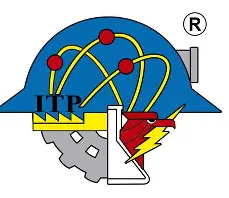
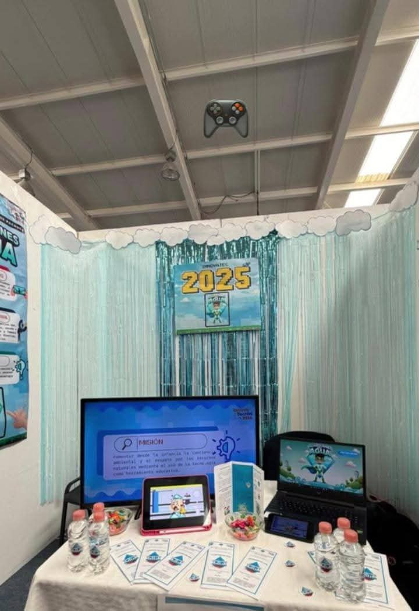
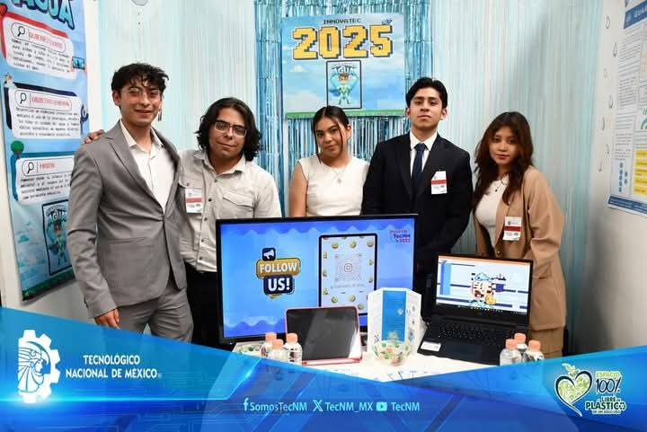
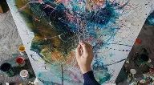
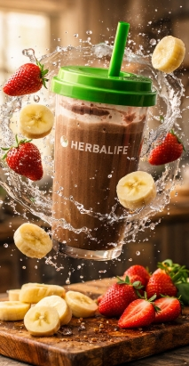

Diana Azeneth Ramírez MartínezIngeniería en ITIC'S | Sexto Semestre |
 |
Estudiante apasionada por el desarrollo tecnológico, enfocada en crear y aprender más sobre mi carrera para su desarrollo y emprendimiento. Mi objetivo profesional es desarrollarme como ingeniera en software especializada en desarrollo web y bases de datos.
Soy estudiante de la Universidad Tecnológica Campus Pachuca, actualmente curso el sexto semestre de Ingeniería en ITIC'S. Mi interés por la tecnología comenzó desde la preparatoria cuando tuve la materia y me gustó mucho; ahí fue donde me interesé por estudiarla y adquirir más conocimiento, ya que puede facilitar procesos y resolver problemas reales. Me apasiona el desarrollo web, las bases de datos y el diseño de interfaces. Mi meta es convertirme en una desarrolladora capaz de liderar o crear proyectos tecnológicos.
Carrera: Ingeniería en ITIC'S
Semestre actual: Sexto semestre
Cursos relevantes:
Descripción: Aplicación móvil interactiva para niños de entre 6 a 12 años.
Objetivo: Enseñar el cuidado del agua mediante juegos interactivos educativos para generar conciencia ambiental.
Tecnologías utilizadas: HTML, CSS, diseño de interfaz.
Mi rol: Desarrollo de parte del documento del proyecto y colaboración en parte de la aplicación, aportando conocimientos en diseño enfocado al público infantil.
Resultados y aprendizajes: Obtuve conocimiento en proyectos con enfoque innovador, logrando transmitir el objetivo y su impacto en los niños.
Evidencia:

Presentación del proyecto Guardianes del Agua en Innovatec.

Equipo de trabajo durante la exposición del proyecto.
Ir al gimnasio
Ver películas
Escuchar música

Pintar en lienzo

Batido flotando
Smoothie de fresa
Frutas en cocina rústica
Correo: dianaazeneth827@gmail.com